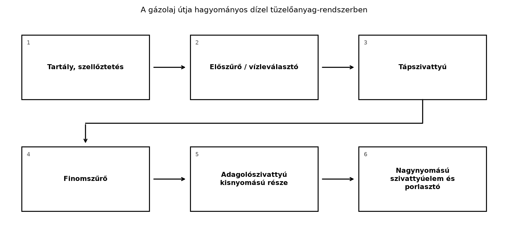

A dízelmotor akkor indul és jár jól, ha a porlasztóba minden üzemállapotban tiszta, levegőmentes, megfelelő hőmérsékletű gázolaj érkezik a szükséges nyomáson. Ezt a feladatot a tüzelőanyag-ellátó rendszer kisnyomású oldala és a befecskendező adagoló együtt végzi. Ha ez a lánc bárhol megszakad – levegőt szív, vizet enged át, eltömődik a szűrő, vagy rosszul adagol a szivattyú –, a motor nehezen indul, egyenetlenül jár, teljesítményt veszít, vagy terhelésre füstöl.
Képzeljük el a gázolaj útját egy hagyományos, elosztós adagolós dízelmotornál. A tartályból a tápszivattyú egy előszűrőn és vízleválasztón keresztül a finomszűrőbe nyomja a tüzelőanyagot, majd az adagolószivattyú kisnyomású belső szivattyúrésze továbbítja a nagynyomású szivattyúelemekhez. A szivattyúelem a gázolajat a befecskendezési nyomásra emeli, és a rendszer – hagyományos rendszereknél porlasztócsövön át – a porlasztóhoz juttatja. A porlasztó finom köddé porlasztja az égéstérbe, a felesleges és hűtő tüzelőanyag pedig visszafolyó ágon tér vissza a tartályba.

A ábrán látható lépéssor a hagyományos rendszerekre jellemző. A korszerű közös nyomásterű rendszereknél a nagynyomású szivattyú különválik az adagolástól, de a kisnyomású oldal felépítése ott is hasonló.
Definíció. A kisnyomású oldal a dízel tüzelőanyag-rendszer azon része, amely a gázolajat a tartályból az adagolószivattyú belső szivattyúterébe, illetve a nagynyomású szivattyú bemenetére szállítja, jellemzően 0,3–5 bar nyomáson. A nagynyomású oldal a befecskendezéshez szükséges, hagyományos rendszerekben (soros és VE adagoló) kb. 300–1000 bar (csúcsnyomás a porlasztónál), a radiáldugattyús elosztós adagolónál kb. 1500–1800 bar, a PDE-nél kb. 2000 bar-ig, közös nyomásterű rendszerekben akár 2000 bar feletti nyomást előállító rész (tájékoztató értékek, ellenőrizendő: gyártói adat).
Definíció. Az adagolás a befecskendezett tüzelőanyag-mennyiség és a befecskendezés időbeli kezdetének vezérlése a motor terhelése, fordulatszáma és hőmérséklete szerint. A dízelmotor terhelését minőségi szabályozással, tehát a beszívott levegő mennyiségének változtatása nélkül, a tüzelőanyag-mennyiség változtatásával szabályozzuk.
A dízel tartály anyaga acél vagy műanyag, belső terelőlemezekkel csökkenti a kanyarban fellépő lötyögést. A tartályt szellőztetni kell, mert a kivett gázolaj helyére levegőnek kell beáramlania, különben vákuum keletkezik, és a tápszivattyú nem tud szívni. A szellőztetés szellőzőszelepen (borulás esetén záró szeleppel) történik; aktívszén-tartály a gázolaj kis illékonysága miatt dízeljárművön jellemzően nincs (ellenőrizendő: gyártói kivitel). A tartályban gyakran van előszűrő a szívócsonkon, és van egy visszafolyó csatlakozás is, mert a dízelrendszerben mindig több gázolajat keringetünk, mint amennyit a motor elfogyaszt.
Gyakori hiba. Ha a szellőzőcső eldugul vagy megtörik, a tartályban vákuum alakul ki. A motor ilyenkor rövid ideig jól jár, majd teljesítménye csökken, végül leáll. A tünet azért alattomos, mert a motor leállása után a vákuum lassan megszűnik, és a motor újra indíthatónak tűnik.
A tápszivattyú feladata, hogy a gázolajat a tartályból az adagolószivattyúhoz szállítsa, és a kisnyomású körben állandó nyomást tartson. Hagyományos rendszerekben mechanikus membrános vagy dugattyús tápszivattyút találunk, amelyet az adagolószivattyú vezértengelye, illetve a motor hajt. Az elektromos tápszivattyú – amely sok korszerű járműben a tartályban vagy a tartály közelében van – a gyújtás bekapcsolása után felépíti a kisnyomást, ami megkönnyíti a légtelenítést és a hidegindítást.
A tápszivattyú nyomása általában 0,3–0,5 bar, de egyes rendszerekben a nagynyomású szivattyú hűtése miatt 3–5 bar is lehet (ellenőrizendő: gyártói adat). A nyomást a visszafolyó ágba épített nyomástartó szelep szabályozza.
A gázolajban mindig van kevés szennyeződés és víz. A finomszűrő a nagynyomású szivattyú és a porlasztók kopása ellen véd. A dízelszűrő általában cserebetétes, papír- vagy szintetikus szűrőanyaggal, és nagyon finom, jellemzően 3–10 µm feletti részecskéket szűr ki. A szűrőház alján vízleválasztó ülepítő tér található, mert a víz sűrűbb a gázolajnál, ezért lesüllyed. A víz jelenléte rozsdát, baktériumos eliszaposodást és télen jégdugót okozhat.
Előírás. A dízel üzemanyagnak meg kell felelnie az EN 590 szabványnak. A hidegszűrhetőség (CFPP) az évszaknak megfelelő téli minőségben jellemzően −15 °C vagy −20 °C körüli; a pontos osztályok és határértékek az EN 590 hatályos kiadása szerint változnak (ellenőrizendő: hatályos EN 590 és üzemanyag-forgalmazói adatok).
Hideg időben a gázolajban található paraffinok kiválhatnak, és a kristályok eltömítik a szűrőt. Ezért a rendszerben előmelegítőt alkalmaznak: elektromos fűtőbetétet a szűrőházban, hűtőfolyadékos hőcserélőt, vagy a visszafolyó meleg gázolajat vezetik a szűrőhöz. A modern rendszerek gyakran a nyomásszabályzó szelepen át visszavezetett gázolaj hőjét hasznosítják.
A dízel tüzelőanyag-rendszerben lévő levegő összenyomható, ezért a nagynyomású szivattyú nem tudja a szükséges nyomást felépíteni, a porlasztó pedig nem nyit ki. A levegő jellemző forrása: szűrőcsere után üres szűrőház, elöregedett vagy meglazult csatlakozó, repedt fémcső, eltömődött visszafolyó ág.
A légtelenítés lépései rendszerenként eltérőek, de a cél mindig az, hogy a kisnyomású oldalt és a szivattyú belső terét levegőmentes gázolajjal töltsük fel. Hagyományos rendszereknél a szűrőházon kézi szivattyú, a szivattyúházon légtelenítő csavar van; elektromos tápszivattyús rendszernél a gyújtás bekapcsolásával gyakran a tápszivattyú magától légteleníti a kört. A szűrőcserénél a legbiztosabb, ha az új szűrőt tiszta gázolajjal előre feltöltjük.
Történeti rendszer. A hagyományos soros adagolószivattyúban hengerenként egy-egy külön pumpaelem van egy sorban, amelyeket a motor vezérművével szinkronban forgó vezértengely bütykös tárcsája mozgat. A dugattyú fel-le mozog a hengerben; a felfelé mozgás közben a gázolaj a nyomószelepen át a porlasztócsőbe, majd a porlasztóhoz jut. A szállított mennyiséget a dugattyún kialakított ferde adagolóél szabályozza: a dugattyú elforgatásával a hasznos löket hossza változik. A szivattyú pontosan a motor forgattyústengely-fordulatának üteme szerint adagol, ezért a befecskendezés ütemezése mechanikusan szinkronizált.
A porlasztó a hengerfejben ül, és a csúcsán lévő apró furatokon keresztül a gázolajat igen finom, nagy sebességű köddé porlasztja az égéstérbe. A porlasztóban rugó terheli a tűt; amikor a nyomás eléri a beállított nyitási nyomást – hagyományos rendszerekben jellemzően 150–250 bar –, a tű felemelkedik, és megtörténik a befecskendezés. A porlasztó zárása a nyomáseséskor a rugó erejével gyors, ami megakadályozza az utócsepegést.
A soros adagoló ma már ritka, de a működési elv – dugattyús térfogatkiszorítás, ferde élű adagolás, nyomószelep – a korszerűbb rendszerek megértéséhez is kell.
A VE elosztós adagoló (Verteiler-Einspritzpumpe) egyetlen szivattyúelemmel látja el az összes hengert, ezért kisebb, olcsóbb és egyszerűbb, mint a soros szivattyú. A forgó axiáldugattyú egyszerre végez lineáris löketmozgást és elfordulást. A lineáris mozgást egy homlokbütykös tárcsa hozza létre: ahány henger van a motornak, annyi bütyök van a tárcsán. A dugattyú elfordulása közben a rajta lévő elosztónyílás sorban nyitja az egyes porlasztócsövek felé vezető csatornákat. Így a szállítás és az elosztás egyetlen alkatrészben egyesül.
A szállított mennyiséget a dugattyún lévő szabályzóél állítja. A dugattyún egy szabályzóhüvely csúszik; a hüvely tengelyirányú helyzetét a fordulatszám-szabályozó karrendszere állítja. A dugattyút a homlokbütykös tárcsa mozgatja. A befecskendezési ciklus úgy működik, hogy a gázolaj a beömlőnyíláson belép a szivattyútérbe, a dugattyú felfelé mozdul, a töltőnyílás záródik, majd a nyomószelep kinyit, és a szállítás megindul. A szállítás akkor ér véget, amikor a dugattyú lefúvófurata kilép a szabályzóhüvely alól: a nyomás hirtelen megszűnik, a nyomószelep zár, és a befecskendezés befejeződik.
Az ábra felső sora a soros adagoló elemét a szállítás kezdetén mutatja: a dugattyú felső éle éppen elzárta a furatot, a hasznos löket () a furat és a ferde él közötti távolság. Ha a függőleges horony a furat előtt áll, nincs szállítás; a dugattyú elforgatásával , így az adag nő. Az alsó sor a VE-ciklus fázisai: beömlés, zárás, szállítás a porlasztóhoz, majd lefúvás, amikor a keresztfurat kilép a szabályzóhüvelyből.
Befecskendezés kezdetének állítása. A VE szivattyúban a görgős gyűrű elforgatásával a bütyök és a görgők érintkezési helyzete változik, így a lökethatár korábban vagy később következik be. A gyűrűt kis dugattyús hidraulikus munkahenger mozgatja, amelyet a belső szivattyú nyomása vezérel. Nagyobb fordulatszámon a belső nyomás nő, a gyűrűt elfordítja, és a befecskendezés kezdete korábbra tolódik – ez a fordulatszámfüggő előretolás.
Alapjárati és végfordulatszám-szabályozó. A VE szivattyú mechanikus centrifugálfordulatszám-szabályozója golyókkal vagy lendítőtömegekkel dolgozik. Alapjáraton a rugóerő és a centrifugálerő egyensúlya tartja a szabályzóhüvelyt a megfelelő helyzetben; ha a motor „megszaladna”, a centrifugálerő a szabályzóhüvelyt a kisebb adag felé tolja el, és csökkenti az adagot. A végfordulatszám-szabályozó feladata, hogy a motor fordulatszáma ne lépje túl a gyártó által megengedett legnagyobb értéket. A két tartományt egy rugórendszer fedezi, így a szabályozó alapjáraton és leszabályozási tartományban is pontos.
Hidegindító. Hideg motornál a besűrűsödött olaj és a hideg falak miatt a motor nehezebben forog, a befecskendezési késedelem pedig nagyobb. A hidegindító kar a befecskendezés kezdetét előrehozza, és részben a szállított mennyiséget is növeli. A gyakorlatban a hidegindító berendezés lehet kézi működtetésű, vagy hűtőfolyadék-hőmérséklet érzékelővel vezérelt hidraulikus előretoló.
Töltőnyomás-függő adagolás (LDA). A feltöltött dízelmotornál a VE szivattyúra szerelt töltőnyomás-függő adagoló (LDA, Ladedruckabhängiger Vollastanschlag) membránt tartalmaz, amelyre a szívócső töltőnyomása hat. Nagyobb töltőnyomásnál a membrán elmozdítja a teljes terhelésű ütközőt, így a szivattyú nagyobb maximális adagot enged; alacsony töltőnyomásnál korlátozza az adagolást, ezzel csökkenti a füstképződést és javítja a hatásfokot.
A hagyományos VE szivattyú mechanikus szabályzóit a korszerűbb radiáldugattyús forgóelosztós adagoló (például a Bosch VP44 típusú) esetében villamos beavatkozók és motorvezérlő egység váltja fel. A szivattyúban több, a tengely körül radiálisan elhelyezett dugattyú dolgozik, amelyeket egy belső bütykös gyűrű mozgat. A radiál elrendezés nagyobb nyomást (tájékoztatóan kb. 1500–1800 bar, ellenőrizendő: gyártói adat) és jobb hatásfokot tesz lehetővé, mint a VE szivattyúé.
A szállított mennyiséget és a befecskendezés kezdetét az EDC (Elektronische Dieselregelung) vezérlő szabályozza. A szivattyúban egy gyors mágnesszelep zárja vagy nyitja a nagynyomású teret, ezzel pontosan meghatározza a szállított mennyiséget. A befecskendezési kezdetet külön mágnesszeleppel vezérelt hidraulikus gyűrűállító állítja. A vezérlő a fordulatszám-, pedálállás-, légtömeg- vagy töltőnyomás-, hűtőfolyadék-hőmérséklet- és tüzelőanyag-hőmérséklet-jelek alapján dolgozik, és több, pontosan leképezett jelleggörbe között interpolál. Ez lehetővé teszi a hidegindítási füst csökkentését, a pontos füsthatárolást, a legnagyobb fordulatszám rugalmas leszabályozását és a diagnosztikát.
A PDE (Pumpe-Düse-Einheit, szivattyú-porlasztó egység) rendszerben minden hengerhez külön, a hengerfejbe épített szivattyú-porlasztó egység tartozik. A motor vezérműtengelyének bütyke közvetlenül, nagynyomású cső nélkül nyomja a pumpaelemet, amely a porlasztóval egy egységben dolgozik. Az egység beépített mágnesszeleppel vezérli a befecskendezés kezdetét és végét. Mivel nincs hosszú nyomócső, a rendszerben nagyobb nyomás (jellemzően kb. 2000 bar-ig, tájékoztató, ellenőrizendő: gyártói adat) és gyorsabb befecskendezés érhető el. A PDE rendszer hátránya, hogy a hengerfej és a vezérműlánc mechanikai terhelése nagy, és a szivattyúegységek hűtéséről, kenéséről gondoskodni kell.
A PLD (Pumpe-Leitung-Düse, egységszivattyús rendszer) a PDE rokona: hengerenként egy-egy, a motor vezérműtengelye által hajtott, mágnesszelepes egységszivattyú van a motorblokkban, amelyet rövid nagynyomású cső köt a hengerfejben ülő porlasztóhoz. A mennyiséget és a befecskendezés kezdetét a mágnesszelep vezérlése határozza meg (ferde élű dugattyú-elforgatás nincs benne). A rövid cső rugalmassága miatt a nyomásfelfutás valamivel lassabb, mint a PDE-nél; a hengerfej egyszerűbb. Jellemzően haszongépjárművekben fordul elő (ellenőrizendő: Bosch-dokumentáció).
Továbbvitt eredmény. A hagyományos dízeladagolás alapelveit – a kisnyomású oldal felépítését, a szállítási ciklust, a befecskendezési kezdet állítását és a mennyiségszabályozást – használjuk a Közös nyomásterű (common rail) dízelbefecskendezés alfejezetben, ahol az adagolás szerepét a nyomásszabályozás és az injektor-vezérlés veszi át. A hidraulikus alapfogalmak a Gépkezelő általános ismeretei: hidraulika, pneumatika, gazdaságos üzemeltetés, adminisztráció, hibaelhárítás alfejezetben is visszatérnek.
Példa 1. Szükséges tüzelőanyag-térfogatáram. Adott egy dízelmotor, amelynek effektív teljesítménye , effektív fajlagos fogyasztása , a gázolaj sűrűsége . A motor maximális teljesítményén mekkora tömegáramot, illetve térfogatáramot fogyaszt?
Megoldás. A tömegáram:
A térfogatáram:
A tápszivattyúnak ennél lényegesen többet kell szállítania, mert a visszafolyó ágon is folyamatosan áramlik gázolaj. A visszafolyó és keringtető ág miatt a tápszivattyú szállítása jellemzően 60–100 l/h közötti (ellenőrizendő: gyártói adat). Az eredmény nagyságrendje reális: egy 110 kW-os motor teljes terhelésen 25–30 l/h gázolajat fogyaszt.
Példa 2. Befecskendezési térfogatáram fordulatszám és adag alapján. Egy négyhengerű, négyütemű dízelmotor percenként fordulaton jár. Egy befecskendezési löketre hengerenként gázolajat szállítunk. Számítsuk ki a percenként befecskendezett térfogatot és az óránkénti térfogatáramot.
Megoldás. Négyütemű motorban minden henger minden második fordulatban kap tüzelőanyagot, ezért hengerenként a befecskendezések száma percenként:
Négy hengerre a befecskendezések száma:
A percenként befecskendezett térfogat:
Ez az érték egy részterhelésen reális adagolás; teljes terhelésen a hengerenkénti adag ennél nagyobb, 60–100 mm³/löket is lehet (ellenőrizendő: gyártói adat). ∎
Ügyfélpanasz: téli reggelen a dízel autó nem indul, az önindító forgat, de a motor nem „fog be”; előző nap még jól járt. Az ügyfél szerint a műszerfalon világít az izzítás visszajelző, és az autó félig tele van gázolajjal.
Vizsgálat. A szerelő először megnézi a szűrőházat. A vízleválasztó csavar kiengedésekor víz és zavaros, kocsonyás gázolaj folyik. A csővezetékek ellenőrzésekor a szűrő bemeneti csatlakozásánál enyhe gázolajszivárgás látható. A szivattyú kézi légtelenítője sok levegőt hoz. A diagnózis: a gázolaj hidegben paraffinosodott, a beszívott levegő és a víz miatt a rendszer elvesztette a szállítást.
Javítás. A szerelő kicseréli a szűrőt, kiüríti a vízleválasztót, gondosan meghúzza a csatlakozókat, és a szűrőt előre tiszta, hidegtűrő gázolajjal tölti fel. A légtelenítés után a motor beindul. A tanulság: a dízelszűrő rendszeres cseréje és a téli üzemanyag használata elengedhetetlen, mert a víz és paraffin a hideg indítás leggyakoribb oka.
Cél: a finomszűrő cseréje és a kisnyomású rendszer levegőmentesítése.
Szükséges szerszámok, eszközök, anyagok: szűrőkulcs vagy hevederes kulcs, csavarhúzó, gyűjtőedény, tiszta rongy, új szűrőbetét, gázolaj az előtöltéshez, védőkesztyű, védőszemüveg, kipufogógáz-elszívó, felitató anyag.
Biztonsági korlát. A feladat tanműhelyi környezetre, oktató felügyeletére és a gyártói javítási utasítás betartására vonatkozik; a megadott értékek tanulási példák. Nyomás alatt álló dízel befecskendező rendszert tilos megbontani. A gázolaj bőr- és szemirritációt okozhat, a kiömlött gázolajat veszélyes hulladékként kell kezelni.
Munkalépések:
A metszeten a szűrőbetét (1), a víztér (2) a vízleeresztő csavarral (3) és a vízérzékelővel (4), a fűtőelem (5), a légtelenítő csavar (6) és a kézi tápszivattyú (7) látható. A képsor a 2–8. lépést követi: leeresztés gyűjtőedénybe, betétcsere új tömítéssel, feltöltés, pumpálás nyitott légtelenítő csavarnál a buborékmentes sugárig, végül zárás, indítás és szivárgásvizsgálat.
1. feladat (A). Fogalmazd meg, mi a különbség a kisnyomású és a nagynyomású oldal között egy hagyományos dízel tüzelőanyag-rendszerben!
2. feladat (A). Sorold fel a kisnyomású oldal fő részeit a tartálytól a szivattyú bemenetéig, és írd mindegyik feladatát!
3. feladat (B). Magyarázd el a VE elosztós adagolóban a befecskendezési kezdet fordulatszámfüggő előretolását! Milyen mechanikai elem állítja a kezdetet, és mi a szerepe a belső nyomásnak?
4. feladat (B). Egy dízelmotor teljesítménye , fajlagos fogyasztása , a gázolaj sűrűsége . Számítsd ki a tüzelőanyag-tömegáramot és térfogatáramot teljes terhelésen! (Mértékegységekkel dolgozz!)
5. feladat (C). Hasonlítsd össze a VE elosztós adagoló és a radiáldugattyús forgóelosztós adagoló szabályzását! Milyen előnyöket ad az elektronikus szabályozás a mechanikus centrifugálszabályozóval szemben?
6. feladat (D). Egy autó dízelmotorja hideg reggelen nehezen indul, alapjáraton remeg, terhelésre fekete füstöt ereszt. A szűrőházban víz van, a csatlakozókon gázolajszivárgás látható. Milyen vizsgálatokat végzel, és mi a valószínű ok, illetve a javítás lépései?
Önellenőrzés – válaszok:
1. feladat. A kisnyomású oldal szűri és szállítja a gázolajat a tartályból a nagynyomású szivattyúhoz, 0,3–5 bar nyomáson. A nagynyomású oldal a befecskendezéshez szükséges nyomást állítja elő, hagyományos rendszerekben (soros és VE adagoló) kb. 300–1000 bar (tájékoztató, ellenőrizendő: gyártói adat), és a porlasztón át az égéstérbe juttatja a tüzelőanyagot.
2. feladat. Tartály (tárolás, szellőztetés), előszűrő/vízleválasztó (durva szennyeződés és víz leválasztása), tápszivattyú (szállítás és kisnyomás fenntartása), finomszűrő (finom szennyeződések kiszűrése), adagolószivattyú kisnyomású belső része (belső kenés, hűtés, nagynyomású tér feltöltése).
3. feladat. A VE szivattyúban a görgős gyűrű elfordításával a bütykök és görgők érintkezési pontja eltolódik, ezáltal a szállítási löket kezdete korábbra vagy későbbre kerül. A belső szivattyú nyomása fordulatszámmal nő, ezért a hidraulikus állítódugattyú a gyűrűt nagyobb fordulatszámon előretolja. Ez javítja a gyújtási késedelem utáni égést és csökkenti a füstöt.
4. feladat. Adott: , , . Tömegáram:
Térfogatáram:
Ellenőrzés: a nagyságrend megfelel egy 90 kW-os dízelmotor teljes terhelésű fogyasztásának.
5. feladat. A VE mechanikus szabályzója centrifugálgolyókkal és rugókkal csak alapjáratot és végfordulatszámot tart, illetve a töltőnyomás-függő LDA az adagolást korlátozza. A radiáldugattyús forgóelosztós adagoló elektronikus szabályozással, szenzorjelek alapján pontosan, jelleggörbék szerint szabályozza a szállítási mennyiséget és a befecskendezési kezdetet. Ez lehetővé teszi a hidegindítási füst csökkentését, a füsthatárolást, a pontos leszabályozást, a diagnosztikát és a kompatibilitást a motorvezérléssel.
6. feladat. A nehéz hidegindítás és a remegés a kisnyomású oldal hibáira (víz, levegő) utal; a fekete füst ettől független második hibát jelez: levegőhiányt vagy rossz porlasztást. Vizsgálati sor: vízleválasztó ürítése, a csatlakozók meghúzása, a szűrőház tömítésének ellenőrzése, légtelenítés; a füst okához a levegőszűrő, a töltőnyomás, a porlasztók nyitási nyomása és porlasztásképe porlasztóvizsgálón, valamint a befecskendezés kezdete; majd üzempróba (elszívással). Javítás: szűrőcsere, tömítések cseréje, légtelenítés, a csatlakozók tömítettségének ellenőrzése; szükség esetén a porlasztó vizsgálata.
A dízel tüzelőanyag-rendszer kisnyomású oldala a tartályból a szűrőn és vízleválasztón át a tápszivattyúval juttatja a tiszta, levegőmentes gázolajat a nagynyomású szivattyú bemenetére. A kisnyomású oldal tipikus hibái a beszívott levegő, az eltömődött szűrő, a víz a szűrőházban és a hidegben kiváló paraffin. A hagyományos soros adagoló hengerenkénti dugattyúelemekkel dolgozik; a szállított mennyiséget ferde adagolóél és a dugattyú elforgatása szabályozza. A Bosch VE elosztós adagoló egyetlen axiáldugattyúval szállítja és osztja el a tüzelőanyagot; a befecskendezési kezdetet fordulatszámfüggő hidraulikus gyűrűállítás, az adagolást mechanikus centrifugálszabályozó és töltőnyomás-függő LDA szabályozza. A radiáldugattyús forgóelosztós adagoló, a PDE és a PLD elektronikus szabályozást használ a pontosabb, alacsonyabb károsanyag-kibocsátású működés érdekében.
Továbbvitt eredmény. A kisnyomású oldal felépítését és a hagyományos dízeladagolás alapelveit a Közös nyomásterű (common rail) dízelbefecskendezés alfejezetben használjuk fel, ahol a nagynyomású szivattyú és az injektor vezérlése átveszi a hagyományos adagoló szerepét. A hidraulikus és elektronikus szabályozási elvek a Gépkezelő általános ismeretei alfejezetben is visszatérnek.
Forrástípusok: gyártói javítási utasítások és műhelykézikönyvek (pl. Bosch dízelbefecskendezési dokumentációk); motortechnikai és üzemanyagrendszer szakkönyvek; az MSZT szabványai (pl. EN 590 gázolajszabvány); a gyártói diagnosztikai adatbázisok.
Ellenőrizendő állítások listája: a kisnyomású nyomásértékek (0,3–0,5 bar, illetve 3–5 bar egyes rendszerekben); a tápszivattyú szállítási tartománya 60–100 l/h; a porlasztó nyitási nyomása 150–250 bar; a befecskendezési nyomások (soros és VE adagoló kb. 300–1000 bar, radiáldugattyús elosztós adagoló kb. 1500–1800 bar, PDE kb. 2000 bar-ig); a VE szivattyú belső felépítésére és szabályozási görbéire vonatkozó pontos értékek; az EN 590 szerinti CFPP osztályok és határértékek; minden szerelési és beállítási nyomaték, hézag és légtelenítési eljárás.